http://ihistorian.livejournal.com/379230.html
ihistorian
Был ли кулацкий террор мифом?
Кукушкин Ю.С. Кулацкий террор в деревне в 1925-1928 гг.// История СССР. - 1961.-№1.-С.94-104.


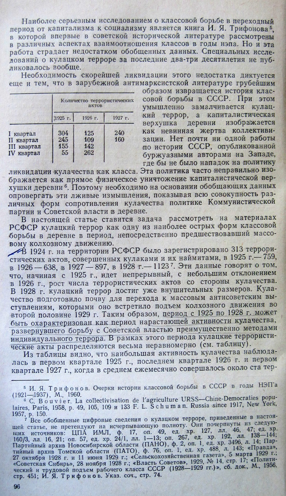
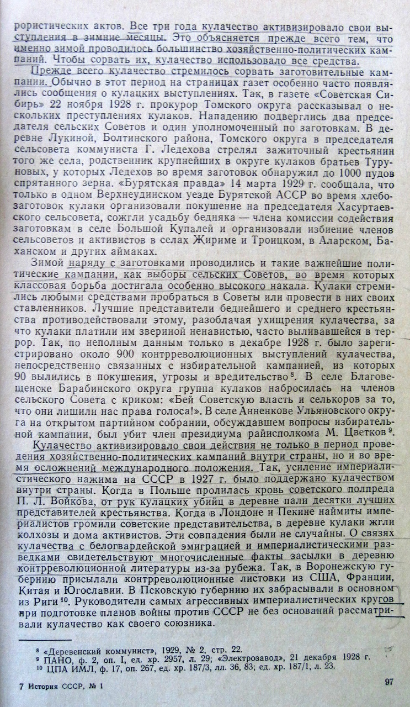
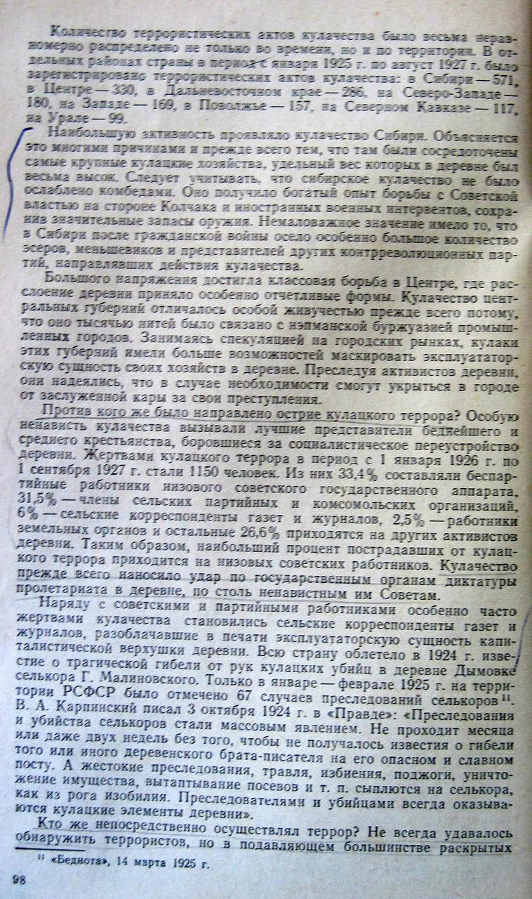
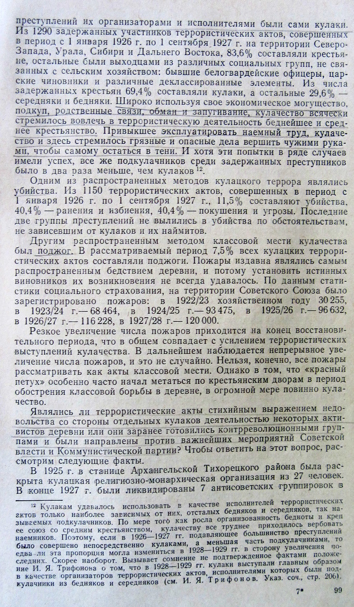

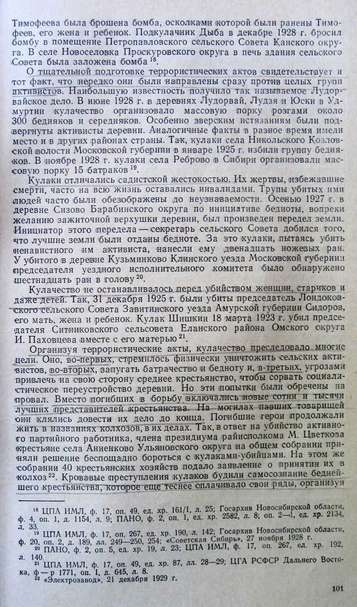

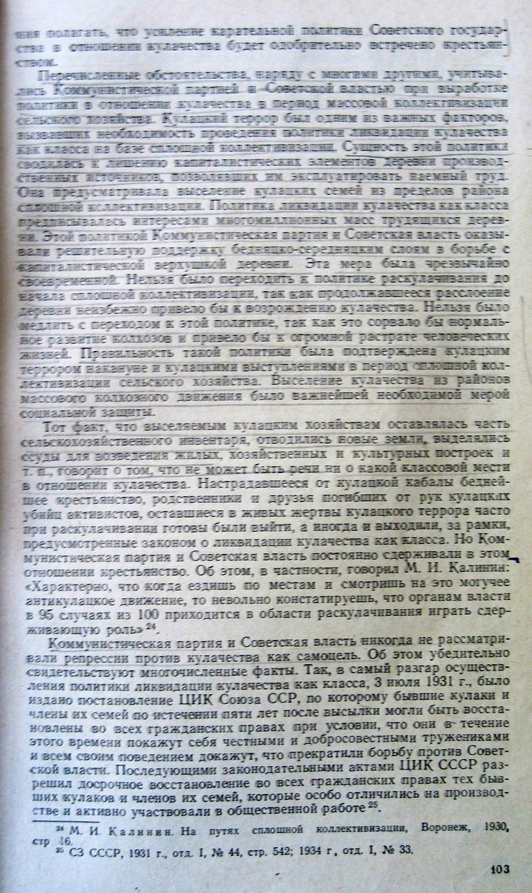

06/11/2011
http://ihistorian.livejournal.com/379230.html
ihistorian
Кукушкин Ю.С. Кулацкий террор в деревне в 1925-1928 гг.// История СССР. - 1961.-№1.-С.94-104.
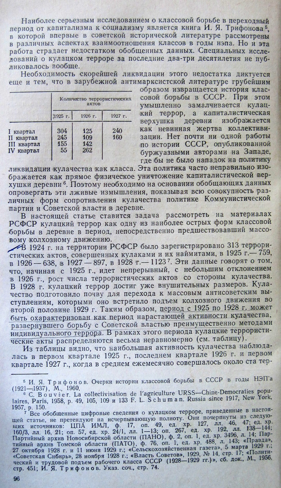
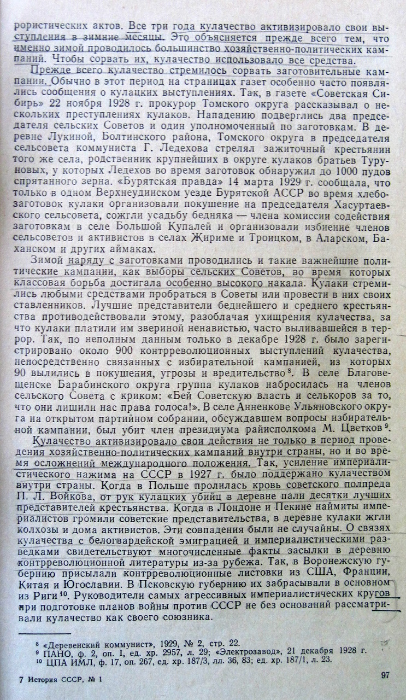
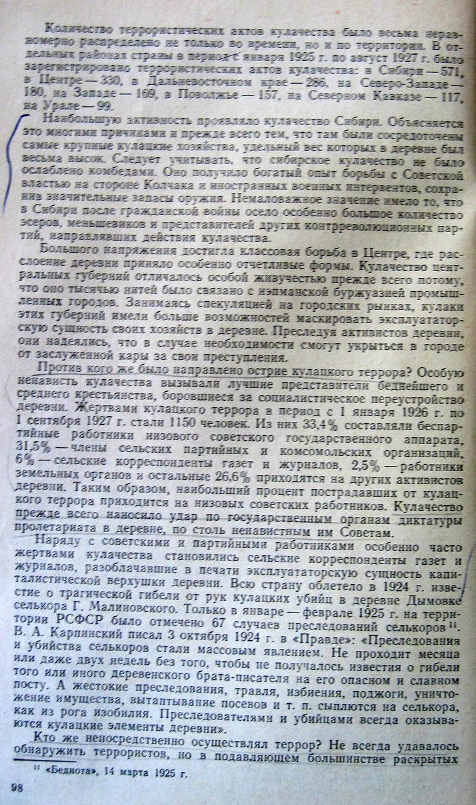
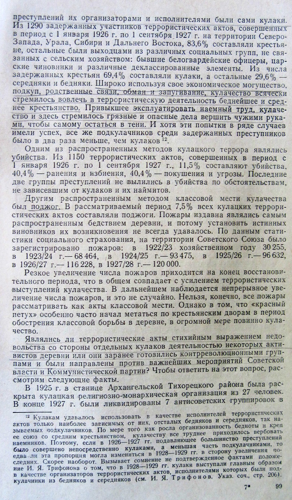
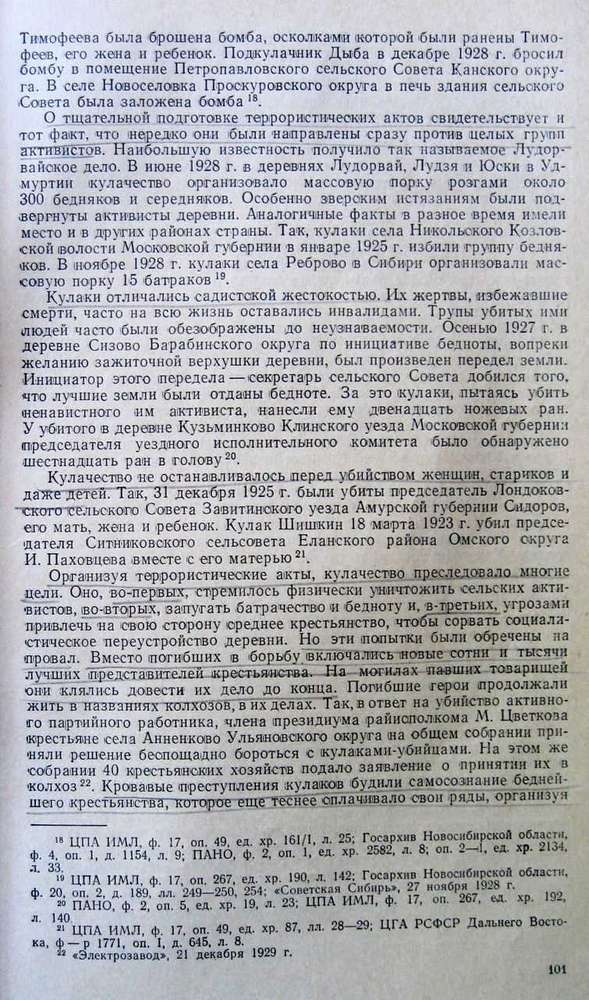
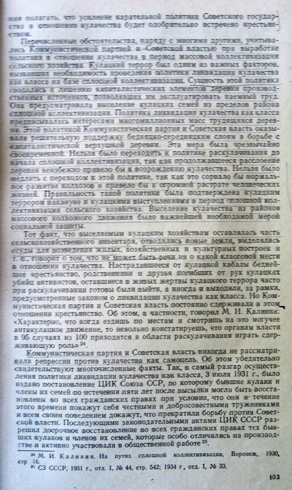
06/11/2011